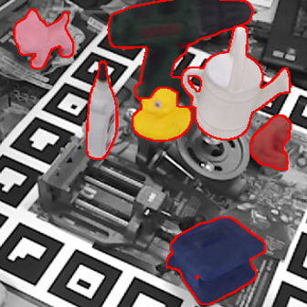

04/
2020
I joined IMAGINE team as a research intern.
Research
I am interested in 6D object pose estimation. My current research focuses on scalable 3D object
detection and 6D pose estimation to handle arbitrary, previously-unseen objects.
BOP Challenge 2023 on Detection, Segmentation and Pose Estimation of Seen and Unseen Rigid Objects
The report of BOP challenge 2023 on state-of-the-art methods for seen and unseen object pose estimation.
Tomas Hodan, Martin Sundermeyer, Yann Labbé, Van Nguyen Nguyen, Gu Wang, Eric Brachmann, Bertram Drost, Vincent Lepetit, Carsten Rother, Jiri Matas
CVPR Mixed Reality Workshop, 2024
project pagearXiv
@inproceedings{hodan2023bop,
title={{BOP Challenge 2023 on Detection, Segmentation and Pose Estimation of Seen and Unseen Rigid Objects}},
author={Hodan, Tomas and Sundermeyer, Martin and Labb{\'e}, Yann and Nguyen, Van Nguyen and Wang, Gu and Brachmann, Eric and Drost, Bertram and Lepetit, Vincent and Rother, Carsten and Matas, Jiri},
booktitle={{Proceedings of the IEEE/CVF Conference on Computer Vision and Pattern Recognition}},
year={2024}
}

GigaPose: Fast and Robust Novel Object Pose Estimation via One Correspondence
A "hybrid" template-patch correspondence approach that is fast, robust, and more accurate to
estimate 6D pose of novel objects in RGB images. GigaPose predicts 6D object pose from a single 2D-to-2D correspondence.Van Nguyen Nguyen,
Thibault Groueix,
Mathieu Salzmann,
Vincent LepetitCVPR, 2024
project
pagearXivgithub
@inproceedings{nguyen2024gigaPose,
title={{GigaPose: Fast and Robust Novel Object Pose Estimation via One
Correspondence}},
author={Nguyen, Van Nguyen and Groueix, Thibault and Salzmann, Mathieu and Lepetit,
Vincent},
booktitle={{Proceedings of the IEEE/CVF Conference on Computer Vision and Pattern Recognition}},
year={2024}
}
@inproceedings{nguyen2024nope,
title={{NOPE: Novel Object Pose Estimation from a Single Image}},
author={Nguyen, Van Nguyen and Groueix, Thibault and Ponimatkin, Georgy and Hu, Yinlin and Marlet, Renaud and Salzmann, Mathieu and Lepetit, Vincent},
booktitle={{Proceedings of the IEEE/CVF Conference on Computer Vision and Pattern Recognition}},
year={2024}
}
OpenStreetView-5M: The Many Roads to Global Visual Geolocation
A new benchmark for visual geolocation (~Geoguessr game).
Guillaume Astruc, Nicolas Dufour, Ioannis Siglidis, Constantin Aronssohn, Nacim Bouia, Stephanie Fu, Romain Loiseau, Van Nguyen Nguyen, Charles Raude, Elliot Vincent, Lintao Xu, Hongyu Zhou, Loic Landrieu
CVPR, 2024
arXivgithub
@inproceedings{astruc2024osv,
title={{OpenStreetView-5M: The Many Roads to Global Visual Geolocation}},
author={Astruc, Guillaume and Dufour, Nicolas and Siglidis, Ioannis and Aronssohn, Constantin and Bouia, Nacim and Fu, Stephanie and Loiseau, Romain and Nguyen, Van Nguyen and Raude, Charles and Vincent, Elliot and Xu, Lintao and Zhou, Hongyu and Landrieu, Loic},
booktitle={{Proceedings of the IEEE/CVF Conference on Computer Vision and Pattern Recognition}},
year={2024}
}
CNOS: A Strong Baseline for CAD-based Novel Object Segmentation A method that can segment novel objects for a given RGB image from only their CAD models.
Based on Segmenting Anything, DINOv2, CNOS is a strong baseline for Task 5 and 6 in the
BOP challenge 2023. Van Nguyen Nguyen,
Thibault Groueix,
Georgy Ponimatkin,
Vincent Lepetit,
Tomáš HodaňICCV 2023 R6D Workshop, 2023
project
pagearXivgithub
@inproceedings{nguyen2023cnos,
title={{CNOS: A Strong Baseline for CAD-based Novel Object Segmentation}},
author={Nguyen, Van Nguyen and Groueix, Thibault and Ponimatkin, Georgy and
Lepetit,
Vincent and Hodan, Tomas},
booktitle={{Proceedings of the IEEE/CVF International Conference on Computer
Vision}},
year={2023}
}
PIZZA: A Powerful Image-only Zero-Shot Zero-CAD Approach to 6DoF Tracking
A method for tracking the 6D motion of objects in RGB video sequences when neither
training images nor even the 3D geometry of the objects is available.Van Nguyen Nguyen+,
Yuming Du+,
Yang Xiao,
Michaël Ramamonjisoa,
Vincent Lepetit3DV Oral, 2022 (+ equal contribution)
arXivgithub
@inproceedings{nguyen3DV22,
author = {Nguyen, Van Nguyen and Du, Yuming and Xiao, Yang and Ramamonjisoa, Michael and Lepetit, Vincent},
title = {{PIZZA: A Powerful Image-only Zero-Shot Zero-CAD Approach to 6DoF
Tracking}},
booktitle = {{International Conference on 3D Vision}},
year = {2022}
}
Templates for 3D Object Pose Estimation Revisited: Generalization to New
Objects and Robustness to Occlusions A method that can recognize objects and estimate their 3D pose in color images even
under partial occlusions. Our method requires neither a training phase on these objects
nor real images depicting them, only their CAD models.Van Nguyen Nguyen,
Yinlin Hu,
Yang Xiao,
Mathieu Salzmann,
Vincent LepetitCVPR, 2022
project
pagearxivgithub
@inproceedings{nguyen2022template,
author = {Nguyen, Van Nguyen and Hu, Yinlin and Xiao, Yang and Salzmann, Mathieu and
Lepetit, Vincent},
title = {{Templates for 3D Object Pose Estimation Revisited: Generalization to New
Objects and Robustness to Occlusions}},
booktitle = {{Proceedings of the IEEE Conference on Computer Vision and Pattern
Recognition}},
year = {2022}
}